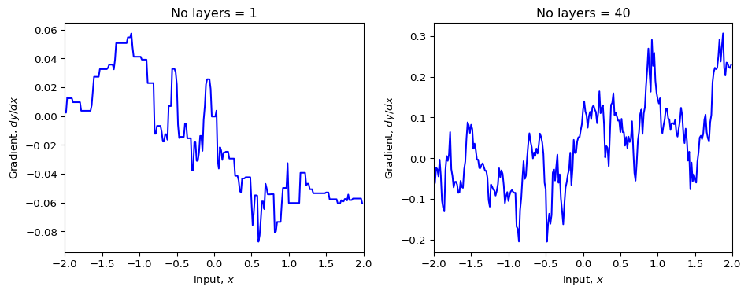

Comentamos en la clase anterior que las diferentes capas de una red neuronal aprenden características de diferentes escalas. Por ejemplo, la primera capa puede aprender características simples como bordes, la segunda capa puede aprender características más complejas como formas, y así sucesivamente. Se esperaba entonces que redes más profundas pudieran aprender funciones más complejas y representaciones más ricas. Se observó este comportamiento cuando AlexNet (8 capas) fue superado por VGG (16-19 capas). Sin embargo, cuando se intentó entrenar redes más profundas, se observó que el error de entrenamiento aumentaba con la profundidad. Un aumento en el error del conjunto de prueba habría indicado un simple sobreajuste, pero el hecho que el error de entrenamiento aumentara con la profundidad indicaba que el modelo más profundo era más difícil de optimizar, no necesariamente que esté sobreajustando.
Figura 1: Errores de entrenamiento y prueba para redes de diferente profundidad. Tomado de He, K., et. al. (2016a).
Problemas de Optimización en Redes Profundas
Gradientes fragmentados (shattered gradients)
Parece que este fenómeno aún no se entiende del todo bien. Una hipótesis es que los gradientes respecto a los parámetros de las primeras capas cambian muy rápidamente. Como el entrenamiento usa una aproximación que asume que los gradientes son suaves, esto induce un error grande.
Para verlo, seguimos un ejemplo tomado del libro (donde he cambiado la inicialización de Glorot a He).
Código
import numpy as npimport matplotlib.pyplot as plt# K is width, D is number of hidden units in each layerdef init_params(K, D):# Set seed so we always get the same random numbers np.random.seed(1)# Input layer D_i =1# Output layer D_o =1# He initialization sigma_sq_omega =2.0/D# Make empty lists all_weights = [None] * (K+1) all_biases = [None] * (K+1)# Create parameters for input and output layers all_weights[0] = np.random.normal(size=(D, D_i))*np.sqrt(sigma_sq_omega) all_weights[-1] = np.random.normal(size=(D_o, D)) * np.sqrt(sigma_sq_omega) all_biases[0] = np.random.normal(size=(D,1))* np.sqrt(sigma_sq_omega) all_biases[-1]= np.random.normal(size=(D_o,1))* np.sqrt(sigma_sq_omega)# Create intermediate layersfor layer inrange(1,K): all_weights[layer] = np.random.normal(size=(D,D))*np.sqrt(sigma_sq_omega) all_biases[layer] = np.random.normal(size=(D,1))* np.sqrt(sigma_sq_omega)return all_weights, all_biases# Define the Rectified Linear Unit (ReLU) functiondef ReLU(preactivation): activation = preactivation.clip(0.0)return activationdef forward_pass(net_input, all_weights, all_biases):# Retrieve number of layers K =len(all_weights) -1# We'll store the pre-activations at each layer in a list "all_f"# and the activations in a second list[all_h]. all_f = [None] * (K+1) all_h = [None] * (K+1)#For convenience, we'll set# all_h[0] to be the input, and all_f[K] will be the output all_h[0] = net_input# Run through the layers, calculating all_f[0...K-1] and all_h[1...K]for layer inrange(K):# Update preactivations and activations at this layer according to eqn 7.5 all_f[layer] = all_biases[layer] + np.matmul(all_weights[layer], all_h[layer]) all_h[layer+1] = ReLU(all_f[layer])# Compute the output from the last hidden layer all_f[K] = all_biases[K] + np.matmul(all_weights[K], all_h[K])# Retrieve the output net_output = all_f[K]return net_output, all_f, all_h# We'll need the indicator functiondef indicator_function(x): x_in = np.array(x) x_in[x_in>=0] =1 x_in[x_in<0] =0return x_in# Main backward pass routinedef calc_input_output_gradient(x_in, all_weights, all_biases):# Retrieve number of layers K =len(all_weights) -1# Run the forward pass y, all_f, all_h = forward_pass(x_in, all_weights, all_biases)# We'll store the derivatives dl_dweights and dl_dbiases in lists as well all_dl_dweights = [None] * (K+1) all_dl_dbiases = [None] * (K+1)# And we'll store the derivatives of the loss with respect to the activation and preactivations in lists all_dl_df = [None] * (K+1) all_dl_dh = [None] * (K+1)# Again for convenience we'll stick with the convention that all_h[0] is the net input and all_f[k] in the net output# Compute derivatives of net output with respect to loss all_dl_df[K] = np.ones_like(all_f[K])# Now work backwards through the networkfor layer inrange(K,-1,-1): all_dl_dbiases[layer] = np.array(all_dl_df[layer]) all_dl_dweights[layer] = np.matmul(all_dl_df[layer], all_h[layer].transpose()) all_dl_dh[layer] = np.matmul(all_weights[layer].transpose(), all_dl_df[layer])if layer >0: all_dl_df[layer-1] = indicator_function(all_f[layer-1]) * all_dl_dh[layer]return all_dl_dh[0],ydef plot_derivatives(K, D, ax): all_weights, all_biases = init_params(K, D) x_in = np.arange(-2, 2, 4.0/256.0) x_in = np.resize(x_in, (1, len(x_in))) dydx, y = calc_input_output_gradient(x_in, all_weights, all_biases) ax.plot(np.squeeze(x_in), np.squeeze(dydx), 'b-') ax.set_xlim(-2, 2) ax.set_xlabel(r'Input, $x$') ax.set_ylabel(r'Gradient, $dy/dx$') ax.set_title(f'No layers = {K}')D =200fig, axes = plt.subplots(1, 2, figsize=(10, 4))plot_derivatives(1, D, axes[0])plot_derivatives(40, D, axes[1])plt.tight_layout()plt.show()

Figura 2: Se muestran los gradientes respecto a las entradas para dos redes perceptrones multicapa con 1 y 24 capas. Los gradientes para la red con 24 capas tienen comportamiento menos suave.
En la Figura 2 vemos que los gradientes para la red con 24 capas tienen más saltos abruptos. Esto hace que sean menos estables durante el entrenamiento.
Esto ocurre porque los pesos de las primeras capas afectan la salida de forma compleja, tal que el gradiente de la salida respecto a los parámertros de una de las primeras capas es una multiplicación de un gran número de derivadas, todas aproximadas. Por ejemplo, para una red de 4 capas \[
\frac{\partial \mathbf{y}}{\partial \mathbf{f_1}} = \frac{\partial \mathbf{y}}{\partial \mathbf{f}_3} \frac{\partial \mathbf{f}_3}{\partial \mathbf{f}_2} \frac{\partial \mathbf{f}_2}{\partial \mathbf{f}_1}
\]
Aprendizaje Residual (Residual Learning)
La solución fue hacer que cada nueva capa aprendiera la diferencia entre la entrada y la salida esperada. Esto se llama aprendizaje residual. Para lograrlo, se guarda la entrada a la capa y se suma con la salida.
En lugar de esperar que una pila de capas aprenda directamente una función subyacente \(f(x)\), se les permite aprender una función residual \(h(x) = f(x) - x\). Aquí \(h(x)\) es la salida del bloque residual y \(f(x)\) es la salida de la red.
La salida del llamado bloque residual es entonces: \[
\mathbf{h}(\mathbf{x}) = \mathbf{f}(\mathbf{x}) + \mathbf{x}
\]
Donde \(\mathbf{x}\) es la entrada al bloque, \(\mathbf{f}(\mathbf{x})\) es el mapeo residual a aprender (e.g., dos o tres capas convolucionales con sus activaciones y normalización), y \(\mathbf{h}(\mathbf{x})\) es la salida.
Al hacer esto, el gradiente tiene términos más directos que no son la multiplicación de una gran cantidad de derivadas aproximadas. Por ejemplo, para una red de 4 capas, la salida estará dada por \[
\begin{align}
\mathbf{y} &= \mathbf{h}_4 = \mathbf{f}_4(\mathbf{h}_3) + \mathbf{h}_3\,,\\
\mathbf{h}_3 &= \mathbf{f}_3(\mathbf{h}_2) + \mathbf{h}_2\,,\\
\mathbf{h}_2 &= \mathbf{f}_2(\mathbf{h}_1) + \mathbf{h}_1\,,\\
\mathbf{h}_1 &= \mathbf{f}_1(\mathbf{x}) + \mathbf{x}\,,
\end{align}
\]
donde vemos que contribuyen varios términos que no son la multiplicación de una gran cantidad de derivadas aproximadas. Se puede verificar explícitamente que estos gradientes son más estables que los de una red no residual con la misma cantidad de capas.
Otra ventaja es que si la identidad es la transformación óptima para una parte de la red, es más fácil para las capas aprender \(h(x) = x\) que forzar a múltiples capas no lineales a aproximar la identidad directamente.
Las redes residuales permiten entrenar redes más profundas. Pero se observa que los gradientes explotan cuando son demasiado grandes. Más abajo vemos cómo atacar ese problema.
Orden de las Operaciones: Pre-activación
En las redes residuales, aplicar la activación después de la transformación lineal hace que la salida \(f(x)\) sea cero cuando la pre-activación es negativa. Esto hace que el bloque no modifique la entrada.
Para no perder flexibilidad de esa manera, se suele invertir el orden de las operaciones:
Activación (usualmente ReLU).
Operación lineal (convoluciones).
Este orden (ReLU antes de la convolución) puede parecer contraintuitivo desde el punto de vista de una red tradicional (que aplicaría primero la transformación lineal y luego la no linealidad), pero en redes residuales puede ayudar a mejorar el flujo del gradiente y evitar la desaparición de información. También se ha explorado el orden inverso (lineal seguido de ReLU), y la elección puede depender de detalles específicos de la arquitectura o del problema.
Crecimiento de varianza en redes residuales
Cuando vimos inicialización de parámetros, vimos que debemos escoger la varianza de la inicialización aleatoria para que la composición de capas no haga que los gradientes crezcan exponencialmente.
En las redes residuales eso sigue siendo válido, pero surge un nuevo efecto. Si la entrada de una capa tiene varianza \(\sigma^2\), la salida de la capa va a tener una varianza del orden de \(2\sigma^2\) ya que es la varianza de la suma de dos variables: la entrada y la salida de \(f(x)\). Por lo tanto, al componer varias capas tendremos varianzas del orden de \(2^n\sigma^2\). Esto hace que se pueda alcanzar el límite de la representación de los números de punto flotante en la computadora para un número de capas suficientemente grande.
Una posible solución es reescalar las activaciones de las neuronas para reducir este factor. Basta multiplicar todas las salidas por \(1/\sqrt{2}\). Sin embargo en la práctica se usa una técnica llamada Batch Normalization que tiene el mismo efecto.
Batch Normalization
La Batch Normalization es una técnica que normaliza las activaciones de una capa para que tengan varianza 1. Esto se hace dividiendo las activaciones por la varianza de la capa y multiplicando por la desviación estándar.
Es decir, para cada mini-lote durante el entrenamiento se calcula \[
\mu_B = \frac{1}{B} \sum_{i=1}^B h_i\,,
\] y \[
\sigma_B = \sqrt{\frac{1}{B} \sum_{i=1}^B (h_i - \mu_B)^2}\,,
\]
y se normalizan las activaciones como \[
\hat{h}_i = \frac{h_i - \mu_B}{\sigma_B + \epsilon}\,.
\] donde \(\epsilon\) es un pequeño número para evitar la división por cero. Las activaciones \(\hat{h}_i\) tienen varianza \(1\) y media \(0\).
Para agregar un poco de flexibilidad, se pueden introducir parámetros entrenables adicionales, usando \[
\tilde{h}_i = \gamma \hat{h}_i + \beta\,.
\]
Estos parámetros son aprendidos durante el entrenamiento y permiten que la capa normalice las activaciones de manera más flexible.
Esto tiene varias ventajas:
Estabiliza el problema de los gradientes crecientes.
Se observa que reduce aún más el problema de los gradientes fragmentados.
Cada estima de la media y la varianza es sobre un mini-lote, lo que hace que sea ruidosa. Este ruido actúa como una regularización ayudando a prevenir el sobreajuste.
Nuestro bloque residual completo está entonces compuesto de:
Batch Normalization.
Activación (generalmente ReLU).
Convolución u otro dependiendo del problema.
Conexión residual que suma la entrada con la salida de la convolución.
A veces se se juntan varias capas convolucionales en un mismo bloque.
A continuación mostramos un ejemplo de código de un bloque residual básico en PyTorch:
import torchimport torch.nn as nnimport torch.nn.functional as Fclass ResidualBlock(nn.Module):def__init__(self, in_channels, out_channels, stride=1):super(ResidualBlock, self).__init__()# First convolution layer with batch normalization and ReLUself.conv1 = nn.Conv2d(in_channels, out_channels, kernel_size=3, stride=stride, padding=1, bias=False)self.bn1 = nn.BatchNorm2d(out_channels)# Second convolution layer with batch normalizationself.conv2 = nn.Conv2d(out_channels, out_channels, kernel_size=3, stride=1, padding=1, bias=False)self.bn2 = nn.BatchNorm2d(out_channels)# Skip connection (identity mapping)self.shortcut = nn.Sequential()# If dimensions change, we need a projection shortcutif stride !=1or in_channels != out_channels:self.shortcut = nn.Sequential( nn.Conv2d(in_channels, out_channels, kernel_size=1, stride=stride, bias=False), nn.BatchNorm2d(out_channels) )def forward(self, x):# Main path out = F.relu(self.bn1(self.conv1(x))) out =self.bn2(self.conv2(out))# Skip connection out +=self.shortcut(x)# Final activation out = F.relu(out)return out# Example usageclass SimpleResNet(nn.Module):def__init__(self, num_classes=10):super(SimpleResNet, self).__init__()# Initial convolutionself.conv1 = nn.Conv2d(3, 64, kernel_size=7, stride=2, padding=3, bias=False)self.bn1 = nn.BatchNorm2d(64)self.maxpool = nn.MaxPool2d(kernel_size=3, stride=2, padding=1)# Residual blocksself.layer1 =self._make_layer(64, 64, 2, stride=1)self.layer2 =self._make_layer(64, 128, 2, stride=2)# Global average pooling and final fully connected layerself.avgpool = nn.AdaptiveAvgPool2d((1, 1))self.fc = nn.Linear(128, num_classes)def _make_layer(self, in_channels, out_channels, num_blocks, stride): layers = []# First block might have a stride to downsample layers.append(ResidualBlock(in_channels, out_channels, stride))# Remaining blocks maintain dimensionsfor _ inrange(1, num_blocks): layers.append(ResidualBlock(out_channels, out_channels, 1))return nn.Sequential(*layers)def forward(self, x):# Initial layers x = F.relu(self.bn1(self.conv1(x))) x =self.maxpool(x)# Residual blocks x =self.layer1(x) x =self.layer2(x)# Classification x =self.avgpool(x) x = torch.flatten(x, 1) x =self.fc(x)return x# Create a small test exampleif__name__=="__main__":# Create a random input tensor (batch_size, channels, height, width) x = torch.randn(4, 3, 224, 224)# Initialize the model model = SimpleResNet()# Forward pass output = model(x)print(f"Input shape: {x.shape}")print(f"Output shape: {output.shape}")
En el libro se encuentran descripciones de redes residuales usadas para problemas con imágenes.
El estado del arte usa además arquitecturas de transformadores. Esto lo veremos la próxima clase.